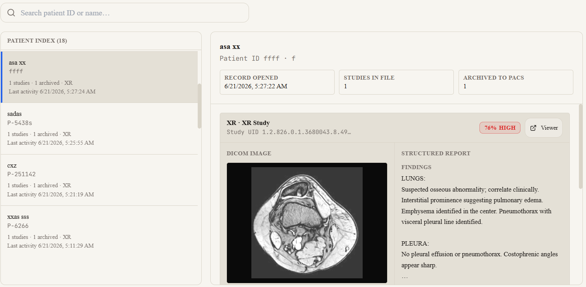

HIPAA Compliant
PACS Integrated
Enterprise Ready
Smarter Imaging. Better Outcomes.
AI-powered medical imaging platform that helps radiologists and healthcare teams analyze studies, prioritize high-risk cases, and collaborate through seamless PACS integration.
